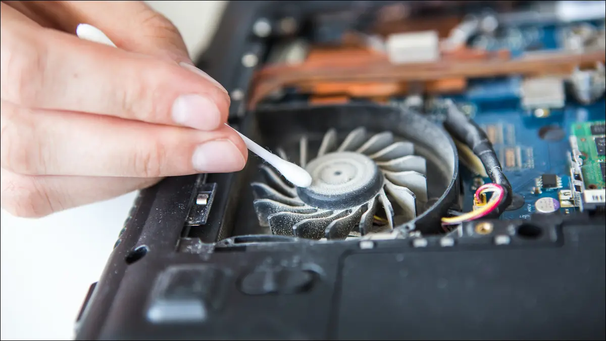

How to make your computer run smoother
Made by Lo and Ivar.
Start-up programs
Startup programs are programs that automatically start when turning on your computer. Some of these programs are being used and should not be deleted but most of them are unnecessary and will cause your computer to run slower. If you are on Windows you can go into the task manager through Ctrl+Alt+Delete you will notice a tab that says startup. On the startup tab you can see which programs that start automatically and also how much of an effect they have on your computer. I would not recommend turning off anything with windows in its name because that could cause some issues when starting up, but most of the other programs should be safe to turn off. You could also just go into the search bar if you are on windows and type startup.
here you will also see the programs that startup when you boot your pc and you will have the option to turn them off.
Temporary files
Temporary files are files that are used temporarily when modifying or creating a file. When the task is completed the temporary files get stored in permanent files. When the temporary files folder gets larger it can cause your pc to get slower. The folder that your computer stores temporary files is often quite large and normally won't affect your performance that much. If your folder is getting full you will start noticing some minimal decreses in your pc performance. Even though some of your temporary files are used, deleting them are safe. If you use windows you can go to the search bar and type disk cleanup.
If you use windows you can go to the search bar and type disk cleanup. Select the disk you want to clean up( in this case it's the temporary files folder)
and then select OK and your temporary files will be deleted.
Memory Leak
Memory Leak is a problem where RAM is not being used properly. If you have an old computer or have bought used RAM-sticks your RAM memory might have a memory leak. Basically that means that your RAM is clogged up, not letting you utilize every gigabyte. Every program that you are running is using RAM, when a program is closed RAM is being released. For example, the more RAM you have, the more tabs you can have opened on your browser. Sometimes closing an application doesn’t release all RAM being used = memory leak
The first and easiest thing you could do is to run Windows Memory Diagnostic. To do so simply search for Windows Memory Diagnostic in the Windows search bar and it will come up. This program will tell you to restart your computer, and once it boots up it should have fixed any potential problems.
If the first solution doesn’t help there are more things you can do. Search for Registry Editor in the windows search bar, right click and press run as administrator. Expand the folder HKEY_LOCAL_MACHINE > SYSTEM > ControlSet001 > Services > Ndu.
 Once you have reached ndu, right click on Start and press modify, if the value data is set to 1 or 2, change it to 4. Press Ok and you’re done.
Once you have reached ndu, right click on Start and press modify, if the value data is set to 1 or 2, change it to 4. Press Ok and you’re done.
Dust inside your computer
If you have never opened up your computer it probably has been collecting a bunch of dust. To get rid of the dust you could use a brush or a vacuum cleaner. If you use a vacuum cleaner be careful not to damage any components since they can be very fragile. Most stationary computers can easily be opened on the side, some require screws to be removed and some don't. If you have a laptop it might be a bit more difficult.

Drivers
Updating drivers should be done regularly. If you are not up to date with your drivers your PC could be slower than it should be.
How to update drivers:
Go to the windows search bar (Windows+S) and search for device manager. Once you have the device manager opened, right click on a device and select Update Driver Software.
CHKDSK command
One way to make sure your hard drive is running in a good order is using the CHKDSK command. The CHKDSK command is used in the command prompt and the way it works is it checks through your harddrive to search for any errors. You could also do the CHKDSK command with /f in the end. Doing the CHKDSK /f command is the same as doing the CHKDSK command but the command with /f will also try to fix the problem.
Click on the search bar down in the left corner on Windows 10.
When you have accessed the search bar type in command prompt or cmd and click on the command prompt tab.
When you are on the command prompt u can just write the command CHKDSK /f and the process will start. You could also specify which one of the hard drives you want to run through by typing CHKDSK E: /f . (The letter E can be a different letter on different computers)
System Reset
If none of these solutions work, you could reset your entire system. To do so just search “system reset” in the windows search bar
Press get started and you will have different options to reset your system.